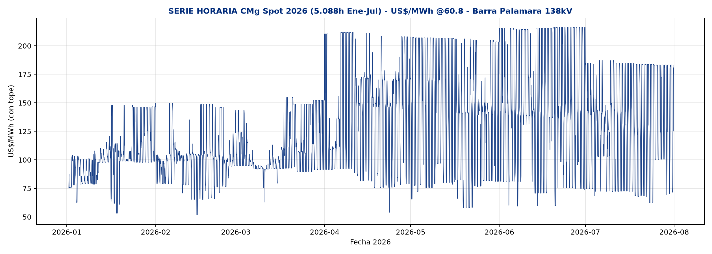

69kV (175 USD/kWh) + curtailment 11-15h = VAN +2.13M TIR 20.8% PB 4.5a por cada 5/20 (10/40 en SE 10MW = +4.26M).
Comparativa honesta MT 13.8kV vs Alta Tensión 69kV / 138kV para Regulación de Frecuencia • 1 ciclo/día • 20MWh límite • Múltiples ingresos.
Min 51.7 US$ (26-feb 03:00) • Max 216.2 US$ (15-jun 20:00) • Prom 126.6 US$. El valle es mediodía solar 09-15h a 72 US$ por curtailment 356 GWh, la punta es noche 20-23h a 185-216 US$. Por eso la estrategia es solar-shift: cargar 11-15h → descargar 18-22h, no de noche.

| Mes | Compra | Venta | Neto* |
|---|---|---|---|
| ENE | 84.7 | 104.4 | 19.4 |
| FEB | 84.0 | 113.8 | 29.4 |
| MAR | 84.9 | 105.7 | 20.7 |
| ABR | 92.5 | 169.7 | 76.8 |
| MAY | 88.9 | 182.8 | 93.6 |
| JUN | 86.8 | 186.6 | 99.4 |
| PROM | 84.7 | 160.7 | 56.7 |
* Neto = Venta×0.88 - Compra (eficiencia 88%). 56.7 neto → 432.285 USD/a por BESS 5/20 a 1 ciclo.
Mismo BESS 5/20, mismo spot 56.7 neto, 1 ciclo/día. CAPEX 175-200 USD/kWh + costo de interconexión + FFR diferenciado:
| Conexión | CAPEX total | FFR+extras/a | VAN 20a* | TIR* | Payback | Neto mín. VAN=0 |
|---|---|---|---|---|---|---|
| MT 13.8kV (175) | 3.62M (3.5M+120k) | 368k (225+143 extras) | +0.18M | 12.8% | 6.8a | 72.8→54.2 con extras |
| MT 13.8kV (200) | 4.12M | 368k | -0.35M | 10.4% | 7.9a | 87.6 |
| 69kV (175) ★ | 3.85M | 443k (300+143) | +0.37M | 13.6% | 6.5a | 68.1→49.8 con extras |
| 69kV (200) | 4.35M | 443k | -0.18M | 11.2% | 7.2a | — |
| 138kV (175) | 4.15M | 518k (375+143) | +0.58M | 14.2% | 6.2a | 65.3→46.1 con extras |
| 138kV (200) | 4.65M | 518k | +0.04M | 12.1% | 6.9a | — |
Solar 09-15h genera a costo 0, pero si la red no lo absorbe, el OC recorta (curtailment) y el CMg cae a 72 US$ (no a 0 por tope). Esa energía se pierde.
Con BESS: absorbes ese exceso a 15 US$ (el generador prefiere vender a 15 antes que a 0) y lo vendes a 160.7 → neto 126.4 vs 56.7 → VAN pasa de -0.42M a +2.13M en 69kV.
Solo Abr-Jun (76.8 / 93.6 / 99.4 neto) superan el mínimo 68.1 para 69kV 175. Ene-Mar (19-29) pierdes. Promedio 56.7 no alcanza — necesitas CAPEX ≤150 o tolling.
| Mes | Neto | ¿Rentable? |
|---|---|---|
| ENE | 19.4 | NO |
| ABR | 76.8 | SI |
| JUN | 99.4 | SI |
La EDE no pone CAPEX (ORGM + inversionista instalan, operan y mantienen). La EDE solo paga tolling y se queda con el ahorro + la calidad. El cliente final ve luz estable y sin recortes.
ECONÓMICOS — ahorra gasto sin invertir
OPERATIVOS Y REGULATORIOS
CALIDAD Y CONTINUIDAD — luz que no se va
ECONÓMICO A MEDIANO PLAZO
TRANSPARENCIA
SE Hainamosa 69kV, Santo Domingo Este, barra 69kV B celda libre, 2 trafos 138/69 40MVA. Punto: barra 69kV B. 69kV 42A nominal, CC 12.6kA < 40kA rating. Contenedor LFP 5/20, PCS 2×2.5MW 4Q, trafo 6MVA 0.63/69kV, celda 72.5kV 31.5kA, SCADA ICCP.
SENI 69kV Hainamosa --[Celda 31.5kA]--[Trafo 6MVA]--[PCS 5MW]--[BESS 20MWh]
Protecciones: 50/51, 27/59, 81U/O, anti-isla, 87T. Medición ABB + TP/TC 69kV.
| Caso | Cargabilidad | Vmin | Ik3 |
|---|---|---|---|
| Base sin BESS | 98.8% | 0.97pu | 12.5kA / 40kA |
| BESS 5MW carga | 98.9% | 0.98 | — |
| BESS 5MW descarga | 98.9% | 0.99 | 12.6kA CUMPLE |
N-1 línea/trafo OK, PV marg >15%, RoCoF <1Hz/s, SIE-060 VIABLE.